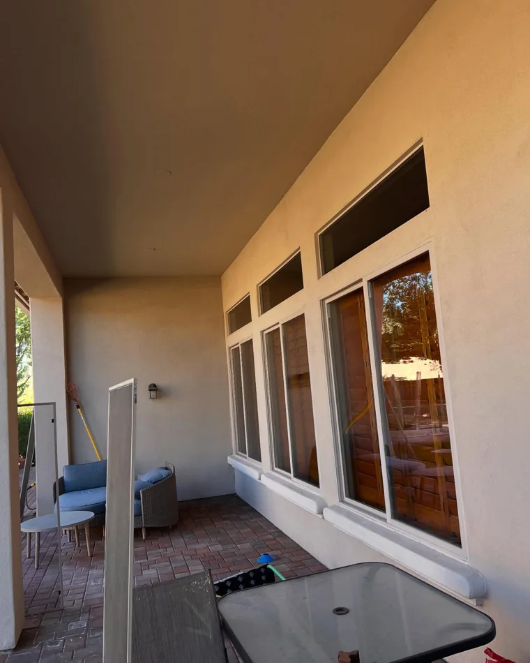
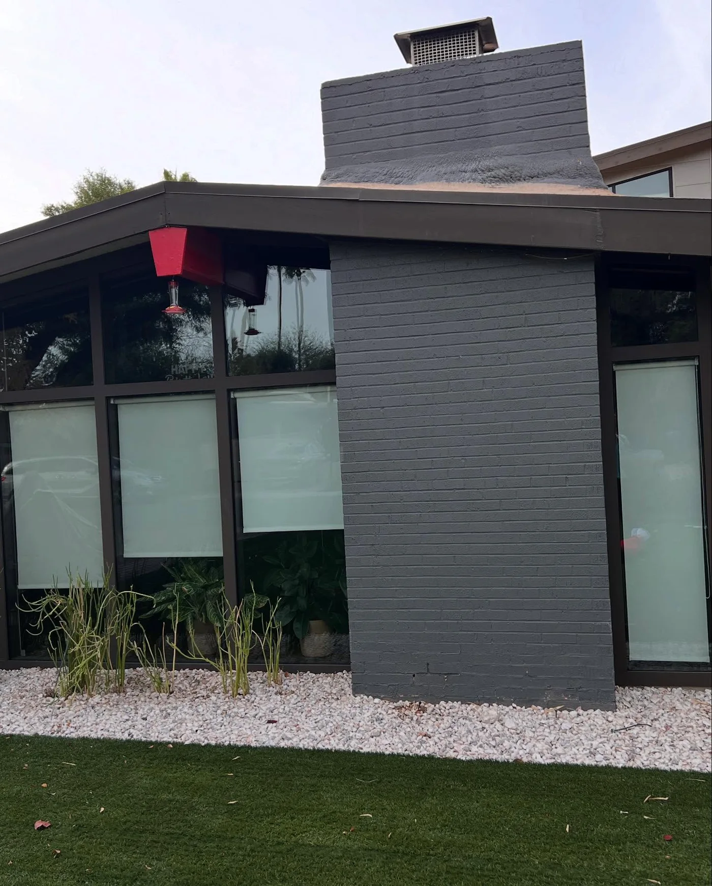

Window cleaning
Interior and exterior glass, tracks, sills and screens. Purified water through a fed pole reaches second storey panes with no ladder marks on the wall and no spotting once it dries.
Homes and businesses. One visit or on a schedule.


Window cleaning, pressure washing and gutters for Phoenix homes and businesses.


Interior and exterior glass, tracks, sills and screens. Purified water through a fed pole reaches second storey panes with no ladder marks on the wall and no spotting once it dries.
Homes and businesses. One visit or on a schedule.
Driveways, walkways, patios, pool decks and block walls. Desert dust and hard water staining come off without chewing up the surface underneath.
Pressure matched to the surface, every time.



Debris cleared, downspouts flushed, and the run checked for sag and separation while we are up there. Monsoon season is a bad time to find out a gutter is packed.
Checked and reported before we leave.


Every photograph on this page is our own work on a real property. No stock, nothing staged.



Three reels straight from @pane_solutions_llc. Tap one to play it.
“Punctual, professional, and incredibly thorough.”
“My windows have never looked better. Completely streak free and crystal clear.”
ChrisGoogle review“From start to finish their professionalism and attention to detail were outstanding.”
Aminata TC DemaihGoogle review“They met with me before and after to ensure I was pleased with their work.”
Katherine SarbackerGoogle review“Answer and his team did a wonderful job doing my windows. Will be using Pane Solutions yearly.”
Gee NayouGoogle review“I took a chance and they did an incredible job, on the spot. Great work, quality service, solid price.”
Michael MorfordGoogle review“All of my demands were addressed with attention to detail by the staff.”
Promise BoleyGoogle review